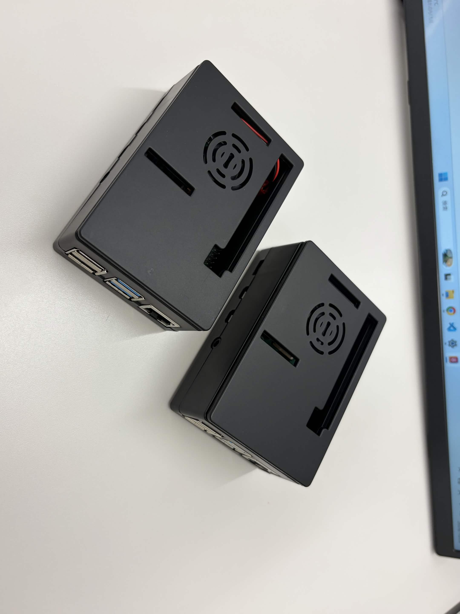
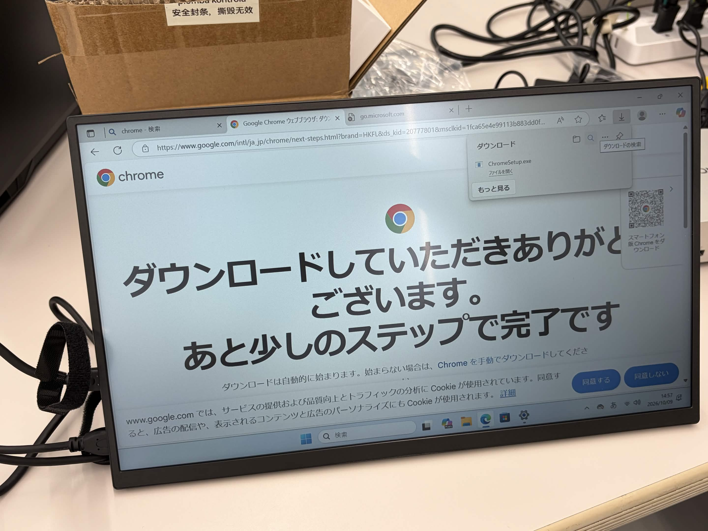
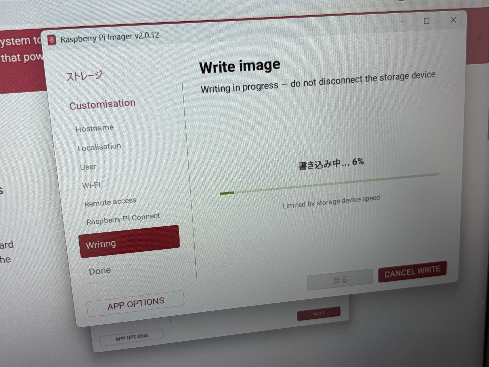
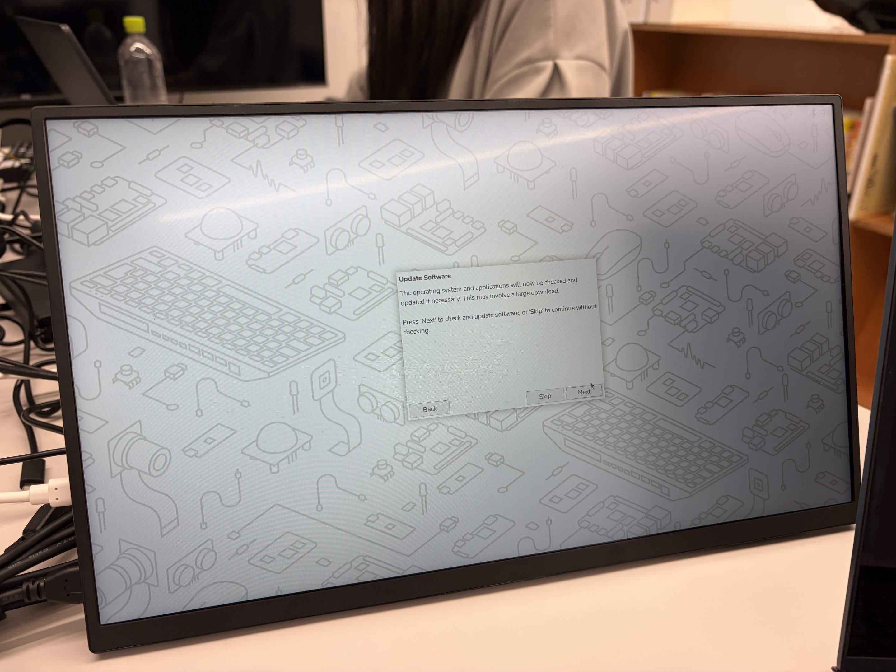
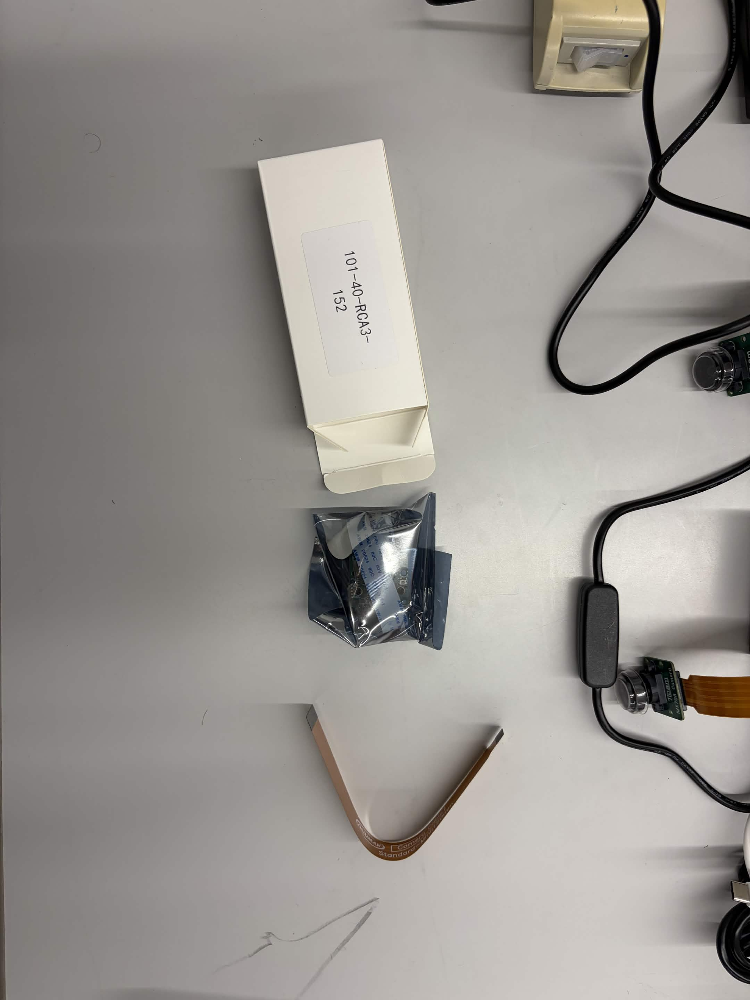
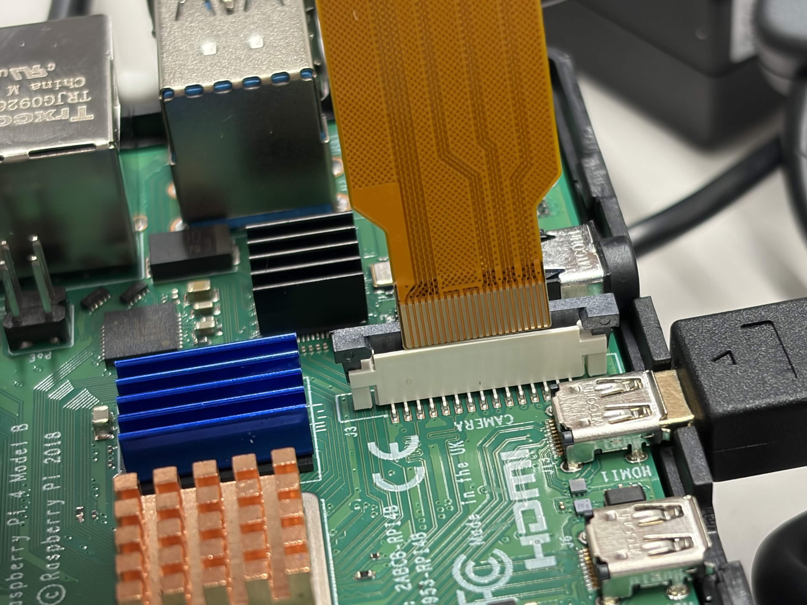
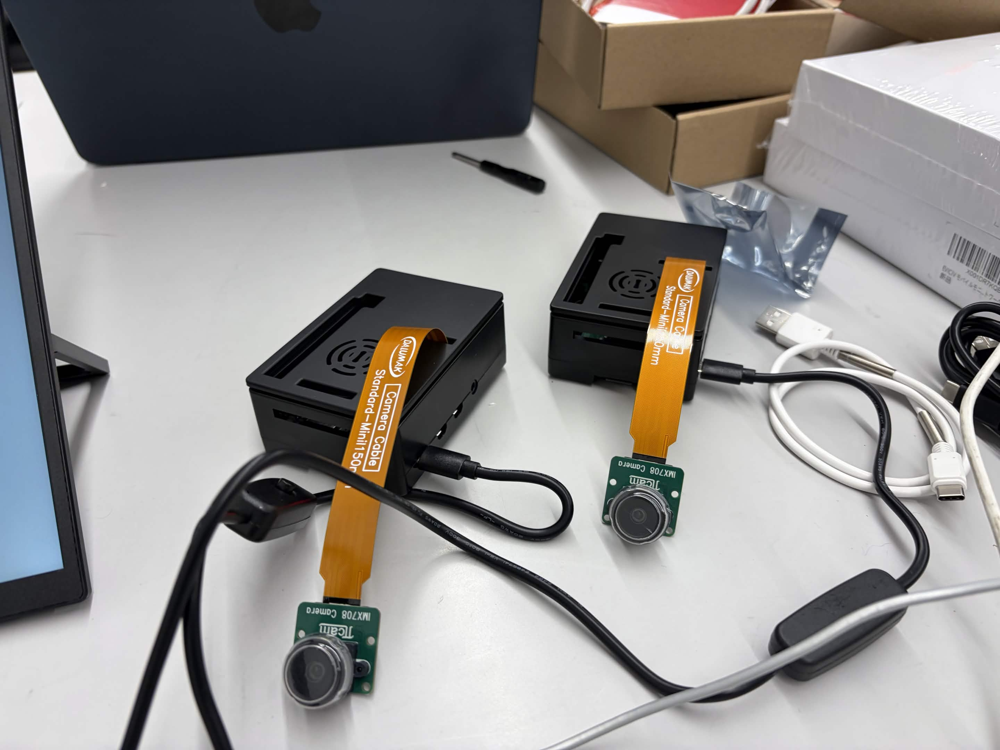
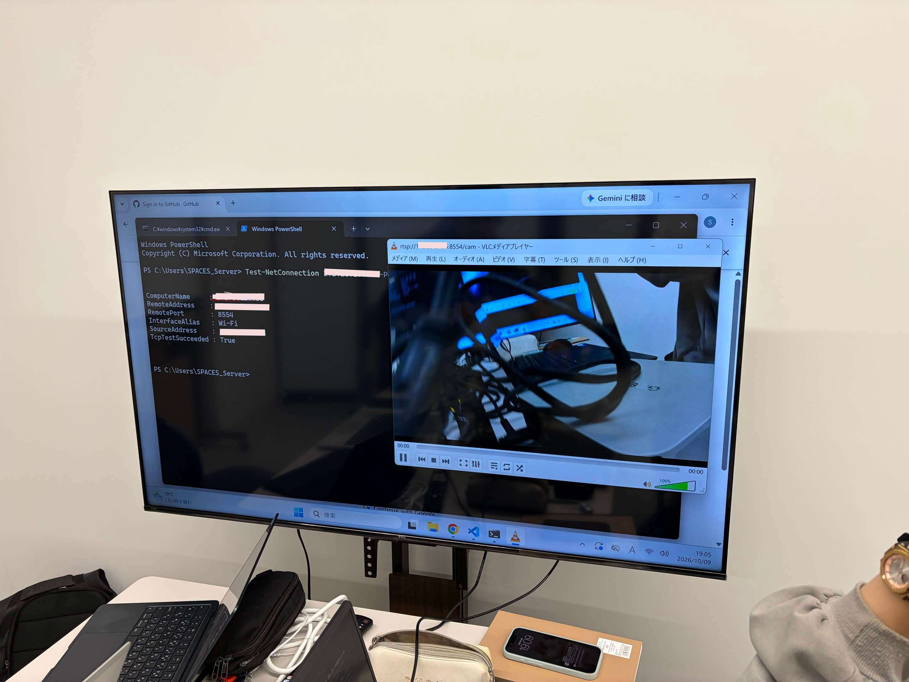

カメラ映像の転送
筆者:E
HUSサポートから発注していた機材が届きました。ミニPCとRaspberry Piを準備して、カメラの映像を別のPCに送れるか試してみます。
まずは開封！
HUSサポートの方から「発注したものが来たぞ！」という連絡が来たので、受け取りに行きました。
届いていたのは、タッチパネル付きモニター、ラズパイ4 4GBが2つ、ミニPC（鯖）、カメラが3つ。いろいろ来た！
- タッチパネル付きモニター
- Raspberry Pi 4 4GB × 2
- ミニPC（サーバー用）
- カメラモジュール × 3

Windows 11が入っていた
早速ミニPCを立ち上げます。こういう機械って、自分でOSを入れるものだと思っていたけど、Windows 11がもう入っていて感動した。
セットアップはまあまあ順調。……と思ったら、キーボードとマウスを経費で買い忘れていました。作業部屋にあった使わなそうなものを拝借してきた（ゴメンナサイ）

microSDカードにOSを書き込む
次はラズパイのセットアップ。前回ラズパイ5をセットアップしたとき、自分はいなかったので、友達から一からやり方を教えてもらいました。
Raspberry Piをセットアップするアプリがあるらしい。microSDカードにOSを書き込んで、それをラズパイに挿して起動するんだって。おもしろいね。

ここでちょっとミス。USB to microSDのアダプターがあったので、USBをそのままラズパイに挿してしまいました。microSDの挿入口にカードを入れるのを忘れていた……。
これじゃUSB差しっぱなしにしないとダメやんけ！
気を取り直して、microSDカードを使ってセットアップを進めます。

自分でつないで、ターミナルで設定した
最初からカメラがつながっていたわけではありません。カメラモジュールを開封して、自分でRaspberry Piに接続するところから始めました。きしめん？名古屋？みたいな平たいうどんのようなケーブルが2本と、カメラが入っていました。
こんなのでちゃんと映るのかしら。。

ケーブルがすごくちぎれそうで怖い。基板にそれっぽい端子はあるけど、壊したくないので接続方法を調べました。コネクタのロック部分をマイナスドライバーで持ち上げ、薄いフラットケーブルを向きに気をつけて差し込んでからロックを戻して固定。細いケーブルを切らないように、ここは自分で一つずつ作業しました。
まずはPi 4を2台、それぞれカメラにつなぎました。これ映るのかな。
Pi 5も余っていたので、こっちにもカメラをつけてみます。ところが、さっきと端子のサイズが違う。発注ミスったかと思った。

Pi 4とは別のケーブルを使うと、今度はぴったりでした。商品にはPi 4用と書いてあったのに、Pi 5にも対応してるのさすが公式の製品だなと思った。

ターミナルからカメラ映像を送る
やりたいのは、Pi 4につないだカメラの映像をWindowsのミニPCに送り、監視カメラみたいに見られるようにすること。将来的にはカメラ4台分を1週間保存したい。カメラの接続はもう確認できているので、まずは通信方法を決めます。SSHで動画を送るのがいいのか、ほかに方法があるのか分からず、ChatGPTに相談しました。
Raspberry PiとWindowsのミニPCは同じWi-Fiにつなぐことにしました。Piに画面をつないで、Pi側の作業はターミナルから。まずOSとCPUの種類、カメラの認識、あとでWindowsから接続するときに使うIPアドレスを確認します。
# CPUアーキテクチャを確認
uname -maarch64なら64bit版のlinux_arm64、armv7lなら32bit版のlinux_armv7を使います。続いてOSも見ておきます。
cat /etc/os-release今回の手順はRaspberry Pi OS BookwormまたはTrixie向け。カメラが認識されているかも確認します。
rpicam-hello --list-camerasCamera Module 3なら、一覧にimx708が出ていれば認識できています。最後にPiのIPアドレスを控えておきます。
hostname -IここからMediaMTXをインストール。必要な道具を入れて、専用フォルダを作ります。
sudo apt update
sudo apt install -y curl wget tar
mkdir -p ~/mediamtx
cd ~/mediamtx使っているCPUに合う最新ファイルを選べるように、まずアーキテクチャを判定します。
ARCH=$(uname -m)
case "$ARCH" in
aarch64)
MTX_ARCH="arm64"
;;
armv7l)
MTX_ARCH="armv7"
;;
*)
echo "Unsupported architecture: $ARCH"
exit 1
;;
esac判定結果を使って、MediaMTXのGitHub公式リリースから対応するファイルのURLを取得します。表示されたURLの末尾がlinux_arm64.tar.gzかlinux_armv7.tar.gzになっているか確認。
URL=$(curl -fsSL \
https://api.github.com/repos/bluenviron/mediamtx/releases/latest \
| grep browser_download_url \
| grep "linux_${MTX_ARCH}.tar.gz" \
| cut -d '"' -f 4 | head -n 1)
echo "$URL"URLが合っていたので、ダウンロードして展開します。
wget -O mediamtx.tar.gz "$URL"
tar -xzf mediamtx.tar.gzファイル一覧に実行ファイルと設定ファイルが出てきたら、MediaMTXのインストールは完了です。
lsmediamtx
mediamtx.yml
mediamtx.tar.gzこれでMediaMTXのインストール完了！ ここから先は設定ファイルを編集して、カメラ映像を配信する準備に進みます。
別のPCでカメラ映像が見えた
接続したカメラの映像を、別のPCから確認してみます。PowerShellで通信を確認して、VLCメディアプレーヤーでRTSPの映像を開きました。
Test-NetConnection <Raspberry PiのIPアドレス> -Port 8554通信チェックが通って、VLCにもカメラの映像が出てきた！ちゃんと転送できてる！

カメラのケーブルをつなぐところからだったけど、Pi 4とPi 5の違いも分かったし、映像を別のPCに送るところまで進められました。